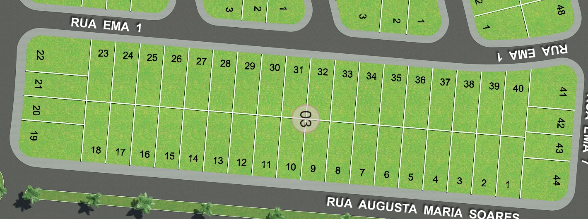

← Consulta completa do Recanto das Emas
Toque no lote. Confira a ficha.
41 lotes interativos em 13 quadras: 3, 13, 14, 16, 17, 18, 19, 21, 27, 30, 32, 33 e 34. A identificação segue os limites e números visíveis da implantação original. Áreas, valores e desconto Black vêm da tabela de novembro/2026.
Planta de referência, sem escala de levantamento topográfico.

Arraste a área da planta após ampliar. Os contornos foram traçados sobre os limites visíveis na imagem original, com rotação dos recortes para facilitar a leitura. O destaque não substitui documento, medição ou confirmação de disponibilidade.
Selecione um lote
Toque na área azul da planta ou escolha no seletor acima.
O que este piloto valida
Clique na planta → identificação de quadra e lote → área e valores rastreados à tabela. 41 das 46 linhas da tabela têm contornos nesta versão. A implantação não imprime as áreas, por isso não há validação independente das áreas no mapa.
Perspectiva ilustrativa é a mesma imagem plana inclinada. Não é modelo volumétrico 3D e não representa relevo, orientação solar, dimensões em campo ou construções. O sistema não oferece reserva nem emite proposta nesta fase.
Fontes
Implantação original do Grupo NB ↗
Tabela Black November, novembro/2026 ↗